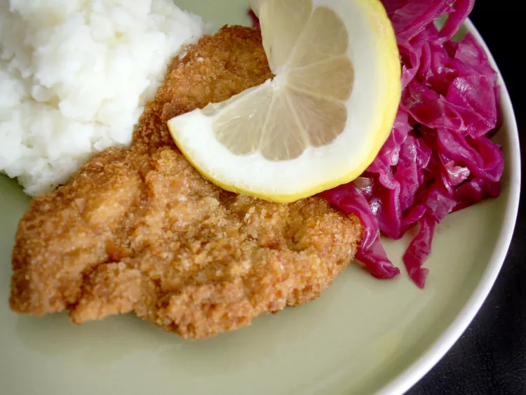

Translation of the name: 'Wiener' this word comes from the word 'Wien', which is the Austrian city called Vienna. 'Schnitzel' means basically meat in a crust. I'm German and hope you can understand my English description. Serve the schnitzels with salad, ketchup and French fries.
Prep Time: 20 mins
Cook Time: 15 mins
Total Time: 35 mins
Servings: 8
Yield: 8 servings
Per serving: 435 calories Total Fat 12g Saturated Fat 4g Cholesterol 169mg Sodium 479mg Total Carbohydrate 51g Dietary Fiber 3g Total Sugars 4g Protein 27g Calcium 133mg Iron 5mg Potassium 303mg